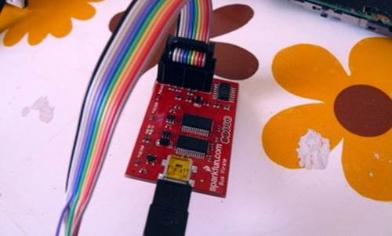
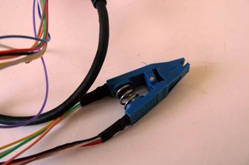
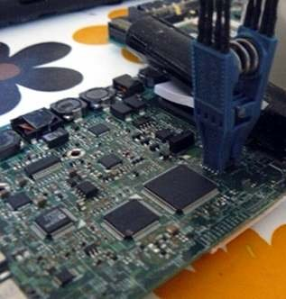
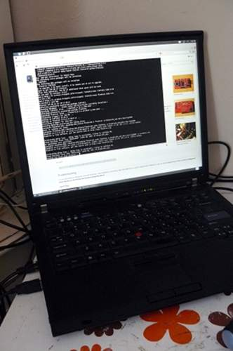

You still have Lenovo BIOS, or you had libreboot running and you flashed another ROM; and you had bucts 1 set and
the ROM wasn't dd'd.* or if Lenovo BIOS was present and libreboot wasn't flashed.
In this case, unbricking is easy: reset BUC.TS to 0 by removing that yellow cmos coin (it's a battery) and putting it back after a minute or two:
*Those dd commands should be applied to all newly compiled X60 ROM's (the ROM's in libreboot binary archives already have this applied!):
dd if=coreboot.rom of=top64k.bin bs=1 skip=$[$(stat -c %s coreboot.rom) - 0x10000] count=64k
dd if=coreboot.rom bs=1 skip=$[$(stat -c %s coreboot.rom) - 0x20000] count=64k | hexdump
dd if=top64k.bin of=coreboot.rom bs=1 seek=$[$(stat -c %s coreboot.rom) - 0x20000] count=64k conv=notrunc
(doing this makes the ROM suitable for use when flashing a machine that still has Lenovo BIOS running,
using those instructions: http://www.coreboot.org/Board:lenovo/x60/Installation.
bad rom (or user error), machine won't boot
In this scenario, you compiled a ROM that had an incorrect configuration, or there is an actual bug preventing your machine from
booting. Or, maybe, you set BUC.TS to 0 and shut down after first flash while Lenovo BIOS was running. In any case, your machine is bricked and will not boot at all.
"Unbricking" means flashing a known-good (working) ROM. The problem: you can't boot the machine, making this difficult. In this situation, external hardware (see hardware requirements above) is needed which can flash the SPI chip (where libreboot resides).
Remove those screws:
Remove the HDD:
Push keyboard forward to loosen it:
Lift:
Remove those:
Also remove that (marked) and unroute the antenna cables:
Some X60T's you have to unroute those too:
Remove the LCD extend board screws. Also remove those screws (see blue marks) and remove/unroute the cables and remove the metal plate:
Remove that screw and then remove the board:
At this point, you should wire up your programmer according to it's documentation. For me, this was (see: "SparkFun cable pin reference"): http://dangerousprototypes.com/docs/Common_Bus_Pirate_cable_pinouts.
Correlating with the following information, I was able to wire up my pirate correctly: http://flashrom.org/Bus_Pirate#Connections
And by following that advice: http://www.coreboot.org/Board:lenovo/x60/Installation#Howto.
Note: that last page says to wire up only those 5 pins (see below) like that: 1, 2, 4, 5, 6.
Note: and then, for power it says (on that coreboot.org page) to connect the power jack to the board and connect the
AC adapter (without powering on the board).
Note: I ignored that advice, and wired up all 8 pins. And it worked.
Here is the pinout (correlate it with your programmer's documentation):
(SPI chip here is on the bottom of the board)
Bus pirate:

Pomona 5250:

Connect pomona:

Connect pirate to USB on 2nd computer:

On the 2nd machine, I did: flashrom -p buspirate_spi:dev=/dev/ttyUSB0 -w bin/x60t/libreboot_ukqwerty.rom
flashrom v0.9.5.2-r1517 on Linux 3.2.0-61-generic (i686), built with libpci 3.1.8, GCC 4.6.3, little endian
flashrom is free software, get the source code at http://www.flashrom.org
Calibrating delay loop... delay loop is unreliable, trying to continue OK.
Found Macronix flash chip "MX25L1605" (2048 kB, SPI) on buspirate_spi.
Reading old flash chip contents... done.
Erasing and writing flash chip... Erase/write done.
Verifying flash... VERIFIED.
At the end it says "VERIFIED", which means that the procedure worked. If you see this, it means that you can put your X60T back together. So let's do that now.
This document is distributed in the hope that it will be useful,
but WITHOUT ANY WARRANTY; without even the implied warranty of
MERCHANTABILITY or FITNESS FOR A PARTICULAR PURPOSE. See ../license.txt for more information.